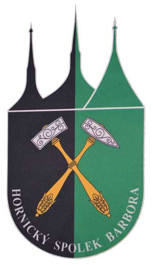

Pro veřejnost
Pro horníky
Kontakt
REGISTRACE
Kontaktujte nás
Pokud máte dotaz k připravované akci, napište nám.
Město Kutná hora
Ing. Monika Pravdová
hornickamesta@mu.kutnahora.cz

Hornický spolek Barbora
Petr Zeman
petrzemankh@seznam.cz